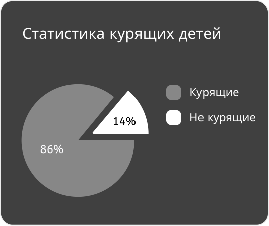
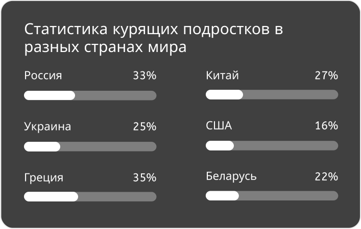

Статистика
 
История вейпа
Сами слова «вейп» и «вейпинг» появились очень недавно. Понятия имеют в своей основе английское слово «vapor», что в переводе означает ни что иное, как «пар». Именно такое значение встречается в ранних названиях атомайзеров, которые именовались «вапорайзерами».
Истоки же возникновения самого понятия обнаруживаются гораздо раньше — в 1927 году. Именно тогда американский ученый Джозеф Робинсон патентует устройство, по сути представляющее первый электронный испаритель (сам патент был им получен в 1930). Задачей этого агрегата, в то время, должна была стать доставка лекарственных средств в виде пара к бронхам пациентов, страдающих от заболеваний этой части организма. Пар же получался путем испарения специальной жидкости. Этим изобретением Робинсон хотел заменить уже существующие приспособления, использующие для терапии дым, сжигающихся в них трав. Но несовершенство технологий в то время и недоверие к изобретению, как врачебного сообщества, так и простого человека, не дало развиться идее.
Что такое жижка
- Жижка или джус- это жидкость, которую испаряет электронный парогенератор
- Состав жижки: глицерин, пропиленгликон, ароматизатор, некотин, дистиллированная вода